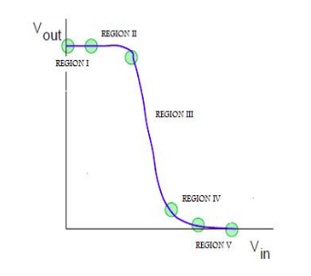

Design of D Flip Flop
Introduction
Inverter is a logic gate, with one input and one output. Its symbol is shown below:-

The output of inverter is complement of the input i.e. if the input is 0, the output will be 1 and vice-versa.
The truth table for inverter is shown below:-

The transistor level schematic of inverter can be designed in many logics,following two logics will be used for
designing in the experiment, Complementary CMOS logic and Pseudo NMOS logic.
Theory
CMOS INVERTER
In the transistor level design of CMOS inverter consists of nmos and pmos transistor in series.The PMOS
transistor is connected between Vdd and output node,whereas the NMOS is connected betweeen the output node and
gnd.
WORKING OF CMOS INVERTER
Before knowing the working of CMOS inverter we will see the regions of operation of transistor so that we can
understand what is actually happening inside the inverter. MOS transistors have three regions of operations :
1) cut-off region 2) linear region 3) saturation region.
The transistor is said to be in cut-off region when Vgs < Vt. Vgs is the voltage applied at gate with respect
to source and Vt is the threshhold voltage below which the transistor does not work. So for transistor to work
Vgs - Vt should be greater than zero always.
The transistor is in linear region when Vgs-Vt>Vds where Vds is the voltage at drain with respect to source.
The transistor is said to be in saturation region when Vgs-Vt < Vds.
The transfer characteristic(i.e. the output voltage vs input voltage) is shown in the figure below.

The operation is divided into 5 region depending on the range of input voltage. The output voltage in every
region is obtained by equating drain to source current of pmos and nmos.
EFFECT OF W/L RATIO ON OUTPUT WAVEFORM
β is the MOS transistor gain factor which depends both on process parameters and geometry parameters.
β = k(W/L)
where K is the factor which shows process dependencyand W & L shows geometry dependency.
For NMOS, gain factor is denoted by βn and for PMOS, gain factor is denoted by βp.
W/L ratio is directly proportional to β.The ratio βn/βp is crucial in determinig the transfer characteristic
of the inverter. When the ratio is increased the transition shifts from left to right,but the output voltage
transition remains sharp. For CMOS the ratio is desired to be 1 so that it requires equal time to charge and
discharge.
EFFECT OF CAPACITANCE ON THE RISE AND FALL TIME
The rise time is defined as the time required to charge the capacitor from 10% to 90% and fall time is defined
as the time required for the capacitor to discharge from 90% to 10%.
Greater value of capacitor implies larger rise and fall time,which furthur implies large delay. The rise time
and fall time are directly proportional to the capacitance, therefore, greater the value of capacitance,
greater will be the time taken for rising and falling.
PSEUDO NMOS
The gate of p-device is permanently grounded which is equivalent to use of NMOS in depletion mode.